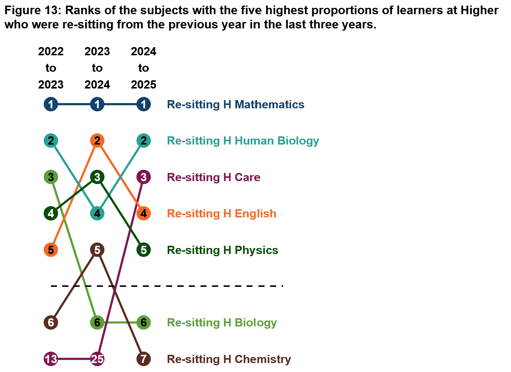
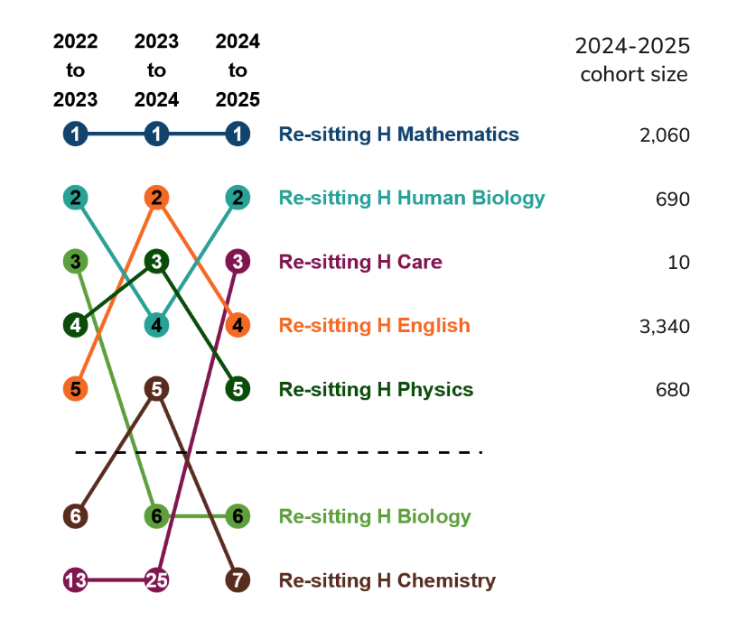
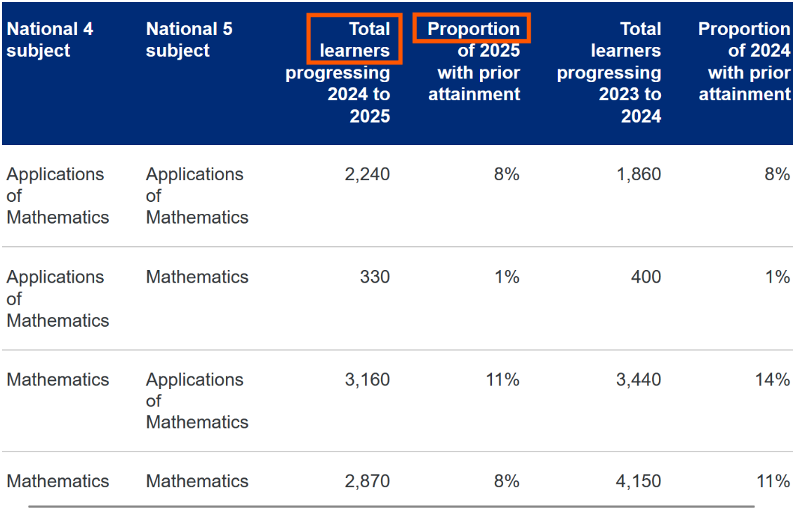
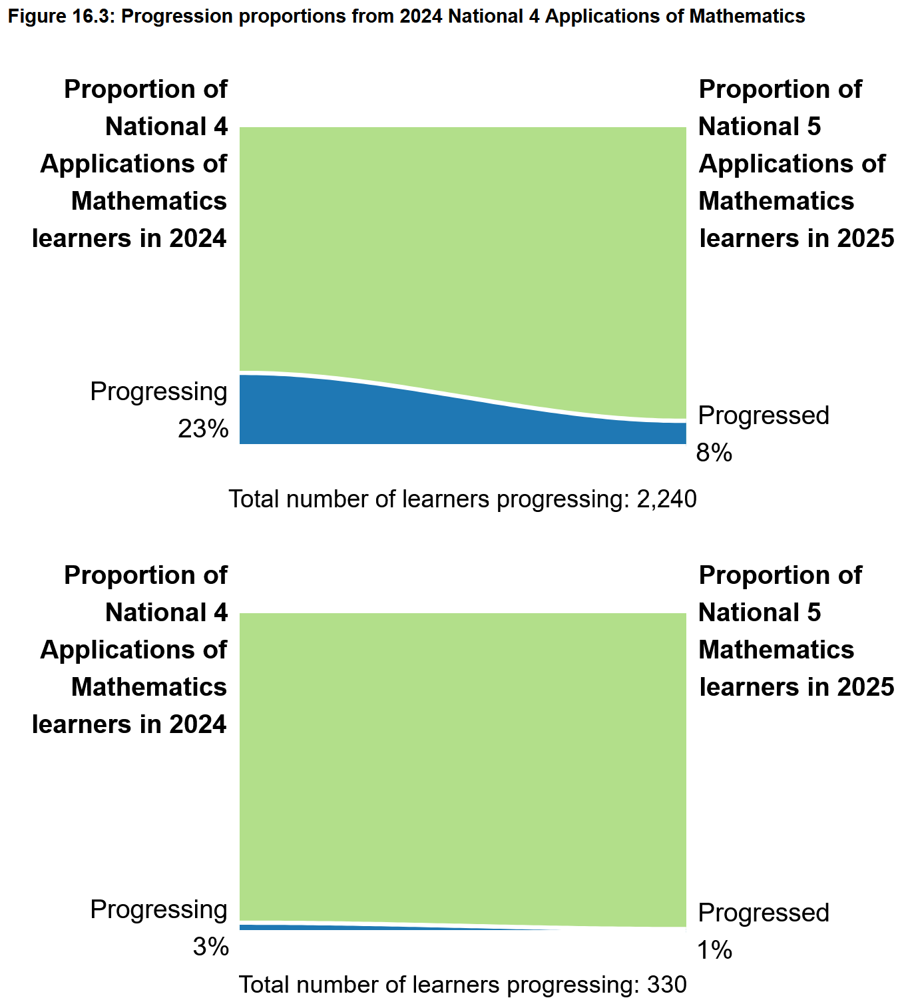
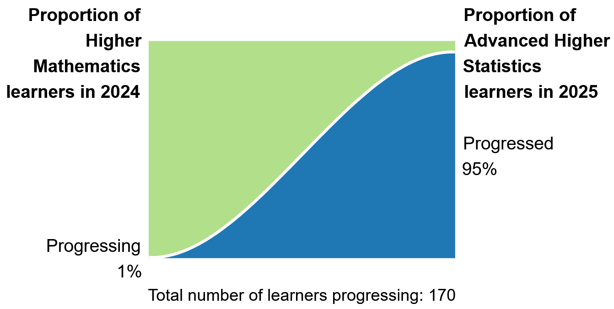
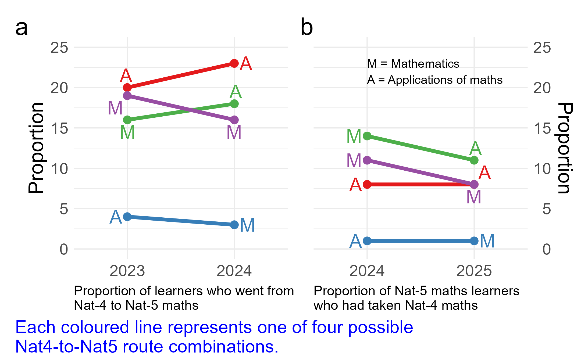

Two Stars and Two Wishes
2026-05-13
The Publication
Progression Statistics 2025 - Official Statistics in Development
Tracks learner movement across National Qualifications:
This Review
Focuses on the figues and tables on the published page
Two elements worthy of positive recognition
Two areas where further development could be made
| Star 1 | Subject ranking figures - information-rich; readable; tell a story for several subjects |
| Star 2 | Dual progression perspective - looks both forwards and backwards; avoids misleading conclusions |
| Wish 1 | Cohort proportion figures - curved lines mislead; a parallel approach reveals hidden patterns |
| Wish 2 | Page structure - figures buried; audience and purpose could be clearer |

Tip
Each figure shows simultaneously:
Why not a table..?
Tip
What makes them work:


Two complementary measures presented together for each transition:
Proportion Progressing
Of all N4 learners, how many moved to N5?
Describes behaviour and choices of the originating cohort
-> Useful for understanding entry decisions and pathways
Proportion with Prior Attainment
Of all N5 learners, how many came from N4?
Describes the composition of the receiving cohort
-> Useful for understanding where learners come from
Tip
These answer different questions.
A subject could have a low progression rate and a high prior attainment proportion - and both facts would be important. Giving both avoids misleading conclusions that either measure alone might suggest.
:::
:::


What the current figures do:
Each cohort proportion figure shows a curved area chart transitioning between two data points - one for each year
Two problems with this approach:
Information poor
Each figure uses considerable space to convey only two numbers
Multiple separate figures prevent cross-subject comparison, which is often exactly what a reader wants to do
The curve is misleading
A smooth curve between two discrete annual measurements implies a continuous trend that does not exist
There is no data between 2024 and 2025 - the curve is an artefact of the chart type, not a feature of the data
An alternative approach - plotting all progression routes together on shared axes:

Tip
Plotting both measures together on shared axes reveals a pattern invisible in the current page:
These move in opposite directions simultaneously
This means N5 cohorts are growing faster than the N4 progression pipeline - most N5 learners are arriving by routes the page does not capture
Why this matters
This is not a visualisation preference - it is a substantive finding about learner pathways that the current design makes structurally difficult to see
The current structure:
Tables are the default view - figures are hidden in accordions
The problem
Policy makers? Teachers? Researchers? Parents?
A better approach
Lead with figures - they orient the reader
Use tables as supporting detail for those who want it
More descriptive figure captions that explain what to look for, not just what is shown
A brief audience statement at the outset would help every reader calibrate their engagement
| Star 1 | Subject ranking figures - information-rich, readable, multi-dimensional |
| Star 2 | Dual progression perspective - methodologically thoughtful, avoids misleading conclusions |
| Wish 1 | Cohort proportion figures - curved lines mislead; a parallel approach reveals hidden patterns |
| Wish 2 | Page structure - figures buried; audience and purpose could be clearer |
The page represents a strong foundation - these developments would significantly extend its value to diverse users